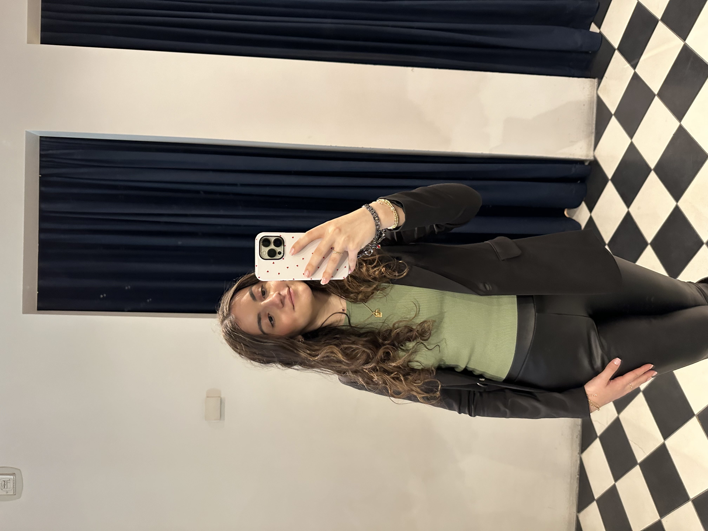

University Student
As a journalism intern for Glitter Magazine, I write articles pertaining to what’s trending and current in pop culture and entertainment. I draft articles using Wordpress and create corresponding social media posts using Buffer. I also work collaboratively with the team to share potential story ideas.
As a student intern, I help out with game day operations for home events, which includes pregame setup, stat delivery, creating content for official social media accounts, tracking in-game changes, and more. My role also includes writing articles about athletic-related events and student-athletes themselves.
This role required me to answer any and all questions regarding the facility and its services, using the POS system for transactions, and operating a golf ball picker to clear the field and restock the ball machine. Depending on shift times, I also had to perform opening and closing operations.
As a staff writer, I pitch and write articles with a focus on college life, fashion, and beauty. My role as a merch director includes using Canva to design merch and placing bulk orders for the team. As a social media committee member, my responsibility is to create content for the official social media accounts according to the posting calendar.
I operate an Etsy storefront, ZoyaChurchDesigns, where I use Canva and Adobe Illustrator to create custom digital wall art. Some of my responsibilities include communicating with customers to make sure their designs are to their liking, creating advertisements to post on social media, and working on deadlines to make sure my customers get their products as quickly as possible.